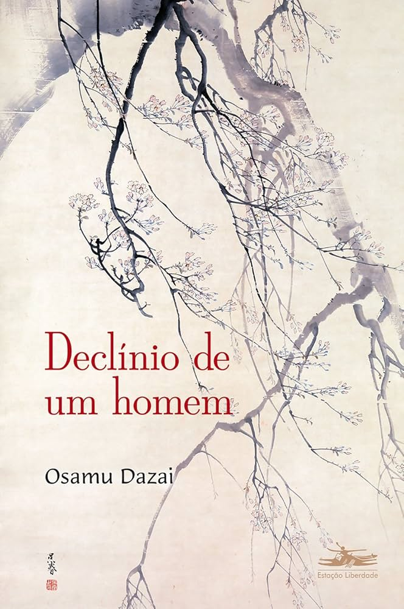
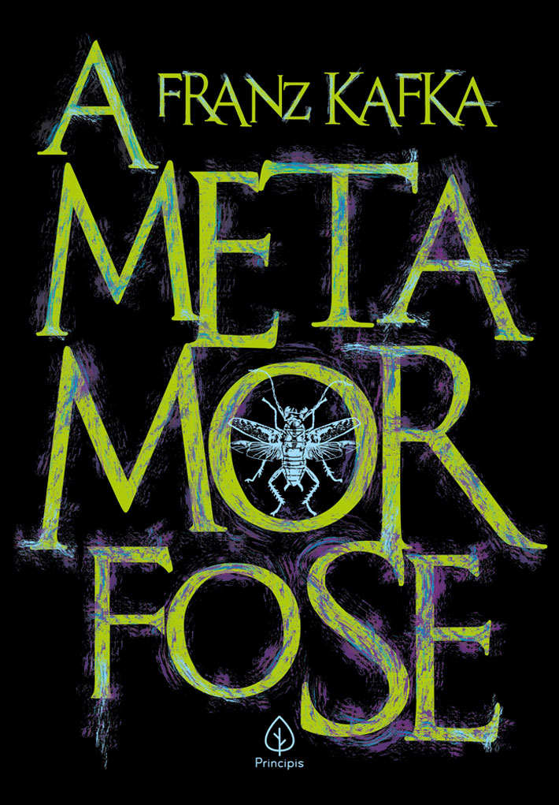
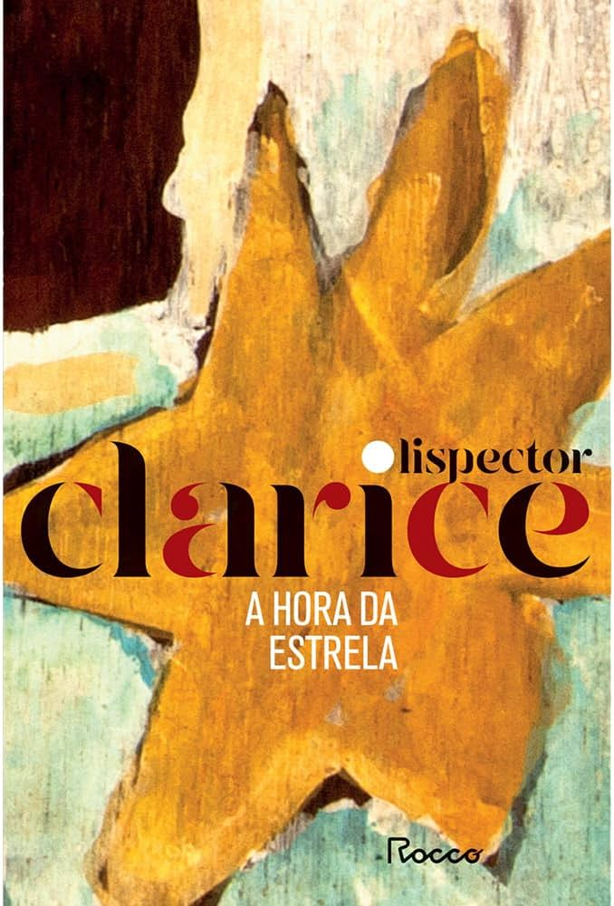
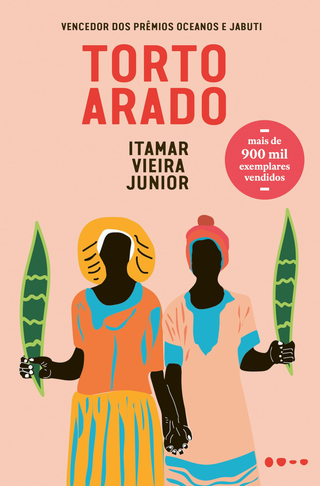

Memórias Póstumas de Brás Cubas
Por: Mister alícia
Memórias póstumas é um livro inovador, em que Machado de Assis trás tópicos como criticas sociais acidas, pessimismo existencial e quebra do romantismo.
Vou compartilhar conhecimentos sobre literatura.
Por: Mister alícia
Memórias póstumas é um livro inovador, em que Machado de Assis trás tópicos como criticas sociais acidas, pessimismo existencial e quebra do romantismo.

Por: Mister alícia
É um romance piblicado por Osamu Dazai, que fala sobre tópicos como declínio Social e Moral, máscara como Sobrevivência e Alienação Existencial

Por: Mister alícia
escrita por Franz Kafka demontra criticas sobre a sociedade como Inutilidade Social,Invisibilidade e Repulsa, Capitalismo Selvagem e Burocracia Opressiva.

Por: Mister alícia
Foi o último romance publicado por Clarice Lispector, onde usa o narrador para discutir as limitações das palavras. A obra reflete o dilema de como a literatura pode retratar a fome e a pobreza sem transformá-las em mero "produto estético" para o consumo da elite.

Por: Mister alícia
publicado pelo escritor e jornalista Euclides da Cunha, criticou e Revelou o Brasil Real,o Racismo Científico e o Determinismo. misturou também o rigor da ciência com a beleza dramática da literatura e o dinamismo do jornalismo.

Por: Mister alícia
é um dos maiores fenômenos da literatura brasileira contemporânea, escrito pelo autor baiano Itamar Vieira Junior. criticou e referenciou a Profundidade Sociológica, racismo estrutural, violência machista contra as mulheres da comunidade e apagamento das culturas afro.

Por: Mister alícia
a leitura de obras como Memórias Póstumas de Brás Cubas, A Metamorfose e Declínio de um Homem vai muito além de apenas cumprir uma obrigação escolar para o vestibular. Esses livros são fundamentais porque funcionam como um espelho das nossas próprias inseguranças, mostrando que a sensação de solidão, a pressão para se encaixar e a ansiedade diante do futuro não são exclusivas da nossa geração, mas dilemas humanos universais. Em um mundo cheio de filtros e cobranças por vidas perfeitas nas redes sociais, essas histórias nos acolhem ao mostrar o lado real, imperfeito e até meio caótico da vida. Portanto, ler esses clássicos nos ajuda a desenvolver mais empatia pelo sofrimento do outro e, acima de tudo, a pensar por conta própria, questionando as regras e as hipocrisias da sociedade em que vivemos.